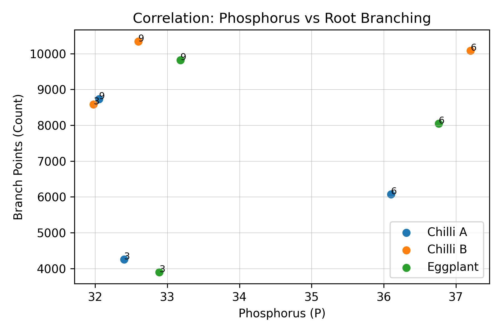
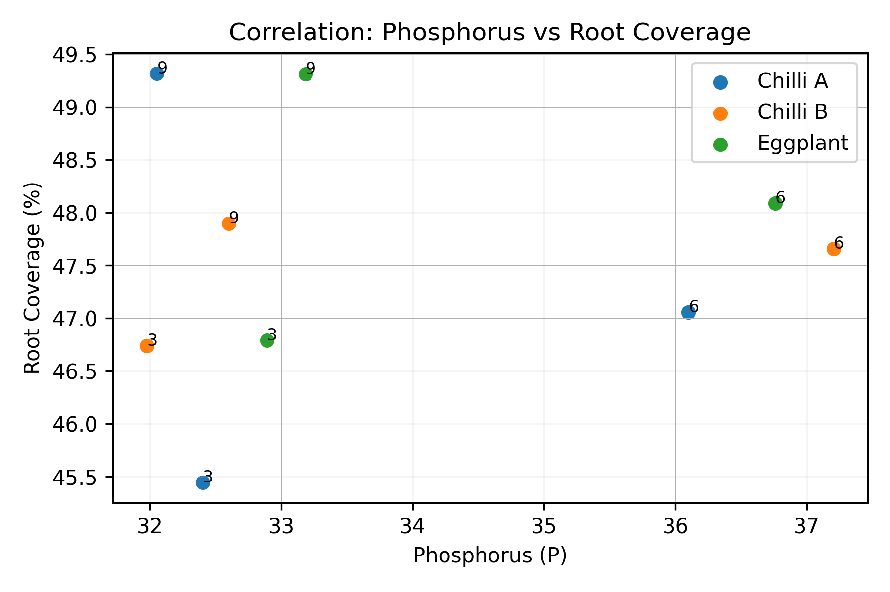
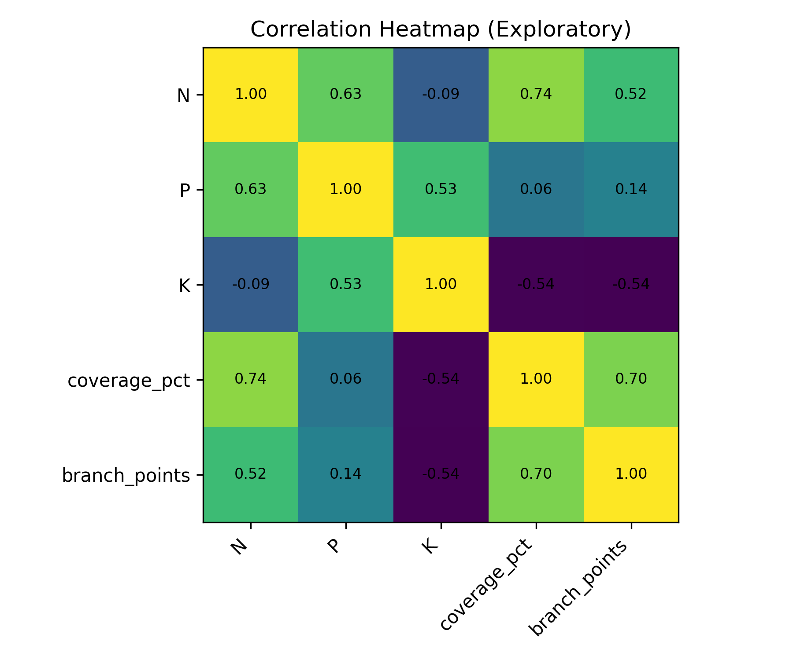

Correlation Analysis (Exploratory)
This section evaluates the relationship between soil nutrient readings (N, P, K) and root morphology metrics (coverage percentage and branching points). Correlations are interpreted as exploratory trends because nutrient uptake in AMF-treated systems can occur efficiently at the root–fungus interface and may not be fully represented by bulk soil concentration alone.

Phosphorus (P) vs Root Branching Points (Week labels shown)

Phosphorus (P) vs Root Coverage (%) (Week labels shown)

Correlation Heatmap between NPK, Root Coverage, and Branching
Key Interpretation
- Coverage vs Branching shows a strong positive relationship, indicating that larger root area tends to have more branching.
- Phosphorus may show a weaker direct correlation with morphology because AMF can transfer P efficiently into the plant rather than leaving high residual soil P.
- Results are used for trend interpretation rather than causal inference due to limited timepoints.